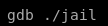
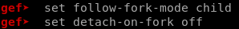

Linux Boxes
jail
nmapAutomator
http
gobuster
prisoner.html
jailuser
jailuser/dev
jailuser.c
jail
compile.sh
initial foothold
gdb ./jail
checksec
Buffer Overflow
skeleton code
crash the program
find offset
mem leak
socket reuse x32 shellcode
shellstorm x32 reverse shellcode
exploit.py
priv esc from nobody to frank
nfs version 3
setuid.c
setuid to frank
priv esc from frank to adm
generate ssh key
drop key into .ssh/authorized_keys
breaking out of rvim
priv esc from adm to root
decode frank
alcatraz history
keys.rar
unrar
breaking keys.rar
rar2john
john
RsaCtfTool
ssh into root
user/root
lessons learned
gdb ./jail
Lets load jail into GDB to find out where to overwrite the EIP to execute our shellcode

set follow-fork-mode child
set detach-on-fork off

to reset the code after a crash, use inferior 1 and “C” (continue) instead of “R” (run)